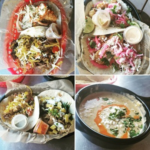

What I like
As far as personal interests go, there is nothing completely out of the ordinary like sky diving. Work keeps me busy so the focus of my spare time is relaxation. I do enjoy good food and drinks. I would describe myself as a self-proclaimed foodie. I love to try new restaurants or new recipes at home. In the summer, grilling or smoking meats is always a fun challenge.
If you are ever in Texas, I highly recommend a local chain, Torchy's Tacos
I also enjoy craft beers. 10 years ago, I would have told you an IPA was gross. Thankfully, my taste buds have matured, just in time for the explosion of local breweries in RI. My favorite brewery is Proclamation in Warwick, RI. I have added a table ranking my preferences.
In addition to drinks and food, I love movies and music. I can have a whole conversation using just movie quotes. Ironically, I do not enjoy GOING to the movies. I would rather be in the comfort of my own home watching them from my couch. Musically, I lean towards hard rock, nu metal, and of course classic rock! There is also a place in my heart for some old school hip-hop, and no, I have no preference between East and West coast.